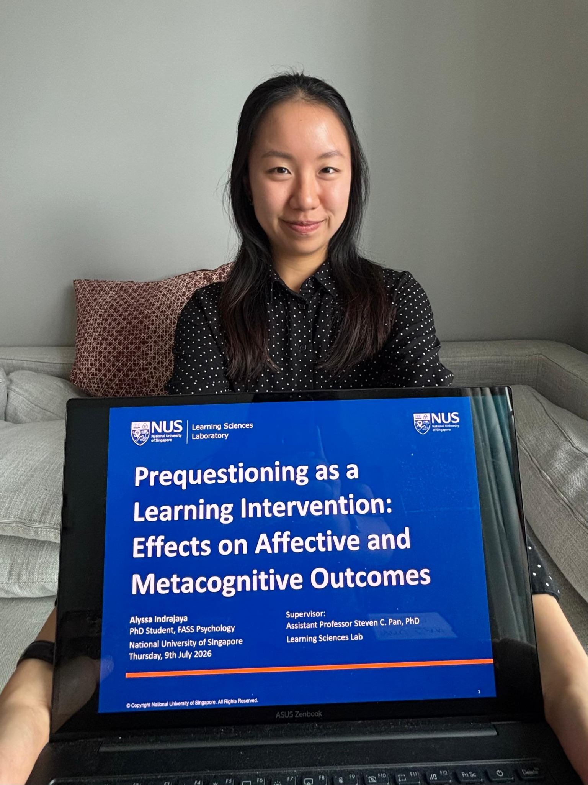

01 / ?
Prequestioning
Have you ever tried quizzing yourself before learning? Research shows that this counterintuitive approach, known as prequestioning, can boost learning—even when your initial answers are just guesses!
LEARNING SCIENCES · COGNITIVE PSYCHOLOGY
I study how we learn—and how evidence-based learning strategies can support not just performance, but confidence and understanding.
ABOUT ME

I investigate active learning strategies, with a particular interest in prequestioning—having learners make guesses before learning the correct answer—and how it can support learners’ emotional and metacognitive learning outcomes.
My current research examines how prequestioning may influence test anxiety and metacomprehension—learners’ ability to accurately judge what they do and do not understand. My broader goal is to equip learners with effective, evidence-based learning techniques that may not come intuitively, helping learners increase their competence and confidence throughout the educational journey.
I am a third-year PhD candidate in Psychology at the Learning Sciences Laboratory, National University of Singapore, advised by Dr. Steven C. Pan. Originally from Indonesia, I earned my bachelor's degree in Psychology from the University of California, Berkeley, where I gained experience in applied behavior analysis and sleep psychology before pivoting to learning sciences.
Outside research, I enjoy reading, swimming, and beta-testing my younger brother’s computer games.
MY RESEARCH INTERESTS
Have you ever tried quizzing yourself before learning? Research shows that this counterintuitive approach, known as prequestioning, can boost learning—even when your initial answers are just guesses!
Have you ever felt nervous before an exam? Test anxiety is a common experience that can affect how students feel, think, and perform during tests.
I am interested in whether prequestioning can alleviate anxiety toward tests.
Have you ever read a text and felt like you understood it, only to realize later that you didn't? Metacomprehension refers to how accurately we judge our own understanding.
Can prequestioning highlight knowledge gaps and improve metacomprehension accuracy?
SELECTED PUBLICATIONS
Pan, S. C., Tung, E., Chiang, L., Indrajaya, A., & Kaku, M. E. · Journal of Educational Psychology
Read paper ↗Dong, R., Indrajaya, A., Yin, L., & Pan, S. C. · Applied Cognitive Psychology, 40(3), e70200
Read paper ↗Pan, S. C., Schweppe, J., Teo, A. Z. J., Indrajaya, A., & Wenzel, N. · Journal of Applied Research in Memory and Cognition
Read paper ↗NOTES & WRITING
REFLECTION
A reflection following a fireside chat at the Redesigning Pedagogy International Conference at the National Institute of Education, Singapore.
Read On Exams →GET IN TOUCH
I welcome conversations about learning sciences, educational research, and potential collaborations.